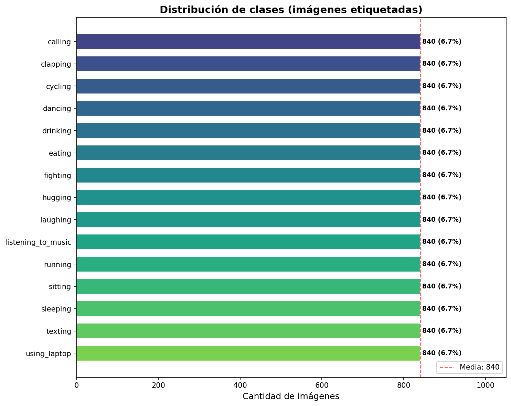
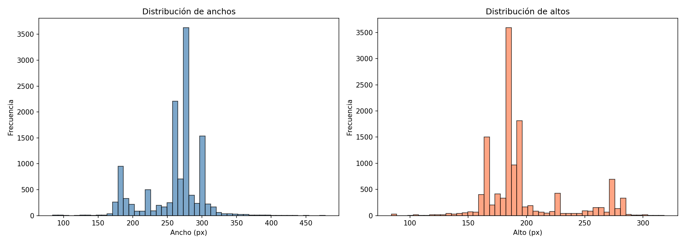
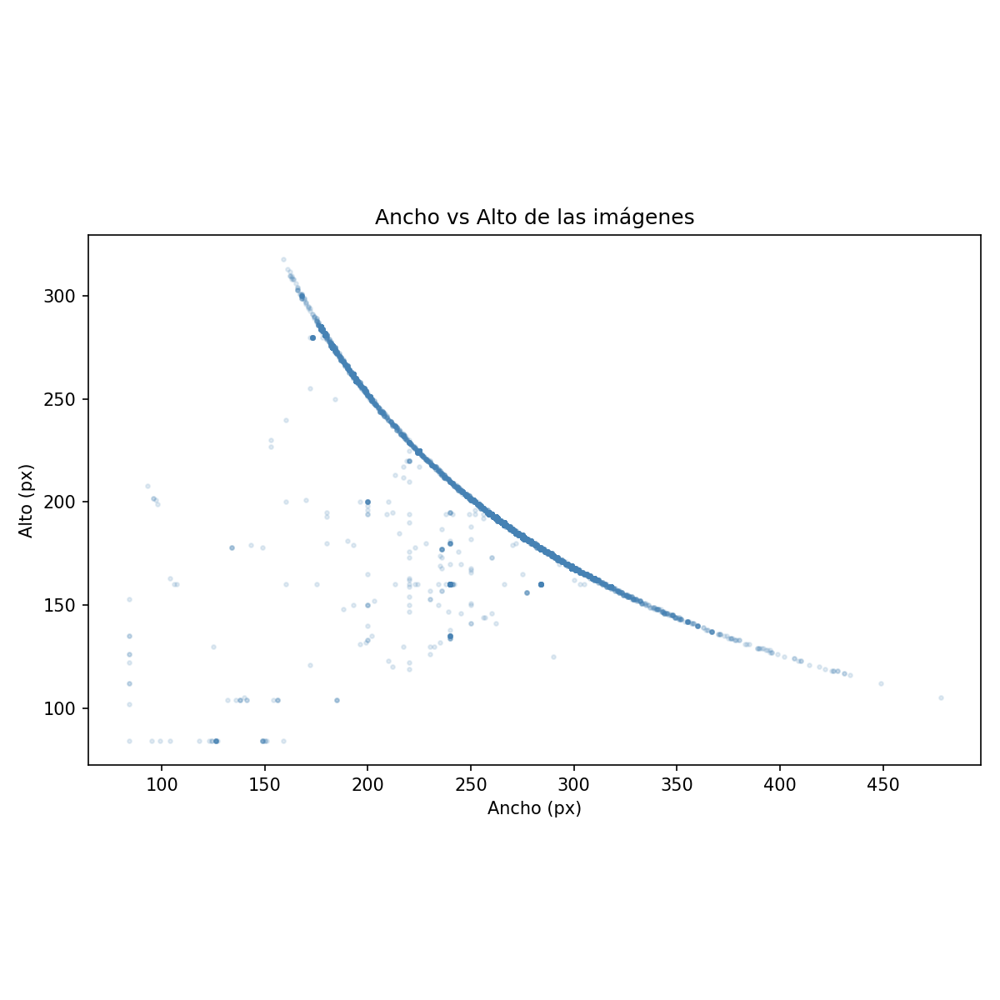

🏃 Human Action Recognition (HAR) Dataset
Descripción del Dataset
| # | Sección | Descripción |
|---|---|---|
| 1 | Información General | Ficha técnica del dataset |
| 2 | Origen y Descarga | De dónde proviene y cómo obtenerlo |
| 3 | Estructura de Directorios | Dónde se almacenan las imágenes |
| 4 | Clases del Dataset | Las 15 actividades humanas |
| 5 | Distribución de Clases | Balance y cantidad por clase |
| 6 | Análisis de Tamaños | Resoluciones, formatos y modos de color |
| 7 | Estadísticas RGB | Media y desviación estándar por canal |
| 8 | Muestras Visuales | Ejemplos por cada clase |
| 9 | Archivos CSV | Descripción de los metadatos |
| 10 | Cómo ejecutar | Instrucciones para reproducir el análisis |
| 📦 Nombre | Human Action Recognition (HAR) Dataset |
| 👤 Autor | Meet Nagadia |
| 🌐 Plataforma | Kaggle |
| 📄 Licencia | Open Database License (ODbL) |
| 💾 Tamaño | ~328 MB |
| 🖼️ Total imágenes | 18,010 (12,600 etiquetadas + 5,410 sin etiqueta) |
| 🎯 Tipo de tarea | Clasificación de imágenes (Computer Vision) |
| 🏷️ Clases | 15 actividades humanas |
| ⚖️ Balance | Perfectamente balanceado (840 imágenes/clase) |
El dataset contiene fotografías de personas realizando 15 actividades humanas diferentes (llamar, aplaudir, andar en bicicleta, bailar, etc.). Estas imágenes son de resolución variada, en formato JPEG, y todas en modo RGB. El objetivo del dataset es servir como base para entrenar modelos de clasificación de imágenes mediante redes neuronales convolucionales (CNN).
El dataset fue publicado por Meet Nagadia en Kaggle, originalmente asociado al desafío DPhi Data Sprint 76 - Human Activity Recognition.
Se descarga automáticamente mediante la librería
kagglehub con el parámetro output_dir, lo que
permite almacenarlo directamente dentro de la carpeta del proyecto:
tp_ml/
└── datos_har/
└── Human Action Recognition/
├── dataset/ (imágenes etiquetadas)
├── new_data/ (imágenes sin etiqueta)
├── dataset.csv
└── new_data.csv💡 Para descargar se requieren credenciales de Kaggle configuradas en
~/.kaggle/kaggle.json.
El script descarga el dataset dentro de datos_har/ en la
raíz del proyecto y renombra automáticamente las carpetas y archivos CSV
originales:
| Original | Renombrado | Descripción |
|---|---|---|
train/ |
dataset/ |
12,600 imágenes JPEG etiquetadas vía CSV |
test/ |
new_data/ |
5,410 imágenes JPEG sin etiqueta |
Training_set.csv |
dataset.csv |
Mapeo filename → label para dataset |
Testing_set.csv |
new_data.csv |
Lista de filenames de new_data |
Ubicación de las imágenes:
dataset/. Cada archivo es un JPEG nombrado como
Image_1.jpg, Image_2.jpg, etc. La etiqueta de
cada imagen se obtiene del archivo dataset.csv.new_data/, sin
etiquetas asociadas.📌 El script
data_explore.pyunifica ambas carpetas copiando las imágenes denew_data/dentro dedataset/, generando un único directorio con 12,611 imágenes para que luego un script de particionado pueda dividir train/val/test de forma controlada.
El dataset define 15 clases de actividades humanas:
| # | Clase | Descripción | |
|---|---|---|---|
| 1 | calling |
📞 | Persona hablando por teléfono |
| 2 | clapping |
👏 | Persona aplaudiendo |
| 3 | cycling |
🚴 | Persona andando en bicicleta |
| 4 | dancing |
💃 | Persona bailando |
| 5 | drinking |
🥤 | Persona bebiendo |
| 6 | eating |
🍽️ | Persona comiendo |
| 7 | fighting |
🤼 | Personas peleando |
| 8 | hugging |
🤗 | Personas abrazándose |
| 9 | laughing |
😂 | Persona riendo |
| 10 | listening_to_music |
🎧 | Persona escuchando música |
| 11 | running |
🏃 | Persona corriendo |
| 12 | sitting |
🪑 | Persona sentada |
| 13 | sleeping |
😴 | Persona durmiendo |
| 14 | texting |
📱 | Persona escribiendo en el celular |
| 15 | using_laptop |
💻 | Persona usando una laptop |
Cada clase contiene 840 imágenes etiquetadas en el conjunto de entrenamiento original.
El dataset etiquetado contiene 12,600 imágenes
distribuidas equitativamente entre las 15 clases (840 imágenes
por clase). Tras la unificación con new_data/, la
carpeta dataset/ totaliza 12,611
imágenes.

Métricas de balance:
| Métrica | Valor |
|---|---|
| Total imágenes etiquetadas | 12,600 |
| Imágenes por clase | 840 |
| Clases | 15 |
| Ratio max/min entre clases | 1.00 |
| Desviación estándar entre clases | 0.00 |
| Balance | ✅ Perfectamente balanceado |
El dataset está perfectamente balanceado: todas las clases tienen exactamente la misma cantidad de imágenes. Esto elimina la necesidad de técnicas de balanceo como oversampling, undersampling o class weights durante el entrenamiento.
Métricas formales de balance:
El coeficiente de variación (CV) mide la dispersión relativa de las cantidades por clase:
\[CV = \frac{\sigma}{\mu} = \frac{\sqrt{\frac{1}{K}\sum_{k=1}^{K}(n_k - \bar{n})^2}}{\bar{n}}\]
donde \(n_k\) es el número de imágenes de la clase \(k\), \(\bar{n}\) es la media y \(K = 15\). Un \(CV = 0\) indica balance perfecto, como en este caso.
La entropía de Shannon de la distribución de clases cuantifica la uniformidad:
\[H = -\sum_{k=1}^{K} p_k \log_2(p_k), \quad p_k = \frac{n_k}{\sum_{j=1}^{K} n_j}\]
La entropía máxima se alcanza cuando todas las clases son equiprobables: \(H_{\max} = \log_2(K) = \log_2(15) \approx 3.91\) bits. En este dataset, \(H = H_{\max}\) ya que \(p_k = 1/15\) para todas las clases, confirmando el balance perfecto.
Las 12,611 imágenes unificadas del dataset son JPEG en modo RGB (3 canales). Sin embargo, las resoluciones son variadas:
| Propiedad | Mínimo | Máximo | Promedio |
|---|---|---|---|
| Ancho (px) | 84 | 478 | ~260 |
| Alto (px) | 84 | 318 | ~197 |
Se encontraron 542 resoluciones únicas. Las más frecuentes:
| Resolución | Cantidad | % del total |
|---|---|---|
| 275×183 | 3,051 | 24.2% |
| 300×168 | 1,036 | 8.2% |
| 183×275 | 637 | 5.1% |
| 259×194 | 614 | 4.9% |


⚠️ Dado que las imágenes tienen tamaños variados, será necesario aplicar redimensionado (resize) a una resolución uniforme antes de alimentar un modelo (por ejemplo, 224×224 para arquitecturas estándar).
Calculadas sobre una muestra aleatoria de 2,000 imágenes (valores normalizados entre 0 y 1):
| Métrica | Canal R | Canal G | Canal B |
|---|---|---|---|
| Media | 0.5713 | 0.5357 | 0.5040 |
| Desviación Estándar | 0.3080 | 0.3037 | 0.3106 |
Estos valores permiten aplicar normalización al preprocesar las imágenes para el modelo:
transforms.Normalize(
mean=[0.5713, 0.5357, 0.5040],
std=[0.3080, 0.3037, 0.3106]
)💡 La media cercana a 0.5 en los tres canales indica imágenes con brillo medio. La desviación estándar (~0.31) muestra buena variabilidad tonal.
A continuación se muestran 3 imágenes de ejemplo por cada una de las 15 clases, que permiten verificar visualmente la coherencia de las etiquetas, la variabilidad dentro de cada clase y la calidad general de las imágenes:

El dataset incluye dos archivos CSV (renombrados por el script) que contienen los metadatos de las imágenes:
dataset.csv| Columna | Tipo | Descripción |
|---|---|---|
filename |
string | Nombre del archivo de imagen (ej: Image_1.jpg) |
label |
string | Etiqueta de la actividad humana (ej: calling,
dancing) |
dataset/ sin subcarpetas por clase.new_data.csv| Columna | Tipo | Descripción |
|---|---|---|
filename |
string | Nombre del archivo de imagen (ej: Image_1.jpg) |
El análisis de este documento fue generado mediante el script
data_explore.py. Para reproducirlo:
# Desde la raíz del proyecto (tp_ml/)
# 1. Activar el entorno virtual
.\har_ml_env\Scripts\Activate.ps1
# 2. Ejecutar el script de exploración
python data_prep/data_explore.pyEl script realiza las siguientes acciones: 1. Carga el dataset desde
datos_har/ (lo descarga desde Kaggle si no existe) 2.
Analiza la estructura de directorios y archivos CSV 3. Copia las
imágenes de new_data/ a dataset/ para unificar
el dataset 4. Calcula y grafica la distribución de clases con métricas
de balance 5. Analiza tamaños, resoluciones y formatos de las imágenes
6. Calcula estadísticas de canales RGB (media y desviación estándar) 7.
Genera una grilla visual con muestras de cada clase
Los gráficos generados se guardan en
data_prep/output/.
Documento generado como parte del proyecto de Machine Learning — Exploración del dataset HAR